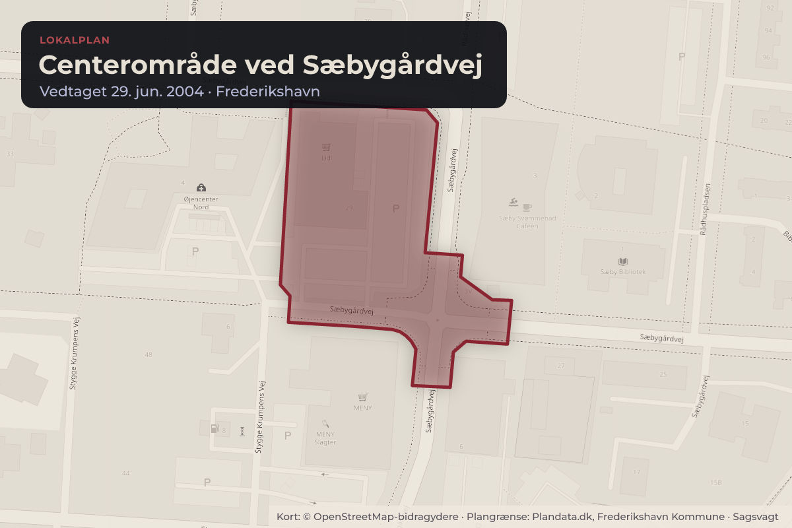

På dagsordenen 2. december, Udvalget for Plan, Miljø og Tilladelser, Frederikshavn
Vedtagelse af lokalplan for erhvervs- og centerområde ved Sæbygårdvej, 9300 Sæby
Klima og grøntByggeri og lokalplanerErhverv og job

Kort: © OpenStreetMap-bidragydere. Plangrænse: Plandata.dk, Frederikshavn Kommune.
Kort fortalt
- Hvem
- Udvalget for Plan, Miljø og Tilladelser, Frederikshavn Kommune
- Hvornår
- Onsdag 2. december 2026
- Status
- På dagsordenen. Sagen behandles på mødet.
Er noget forkert her? Skriv til os
Hvad kan du gøre?
- Skriv til politikerne
- Udvalgets møder er lukkede, men du kan skrive til medlemmerne før mødet onsdag 2. december 2026. Du finder dem på frederikshavn.dk.
Læs hele sagen Kommunens egen tekst
Sagsfremstilling
Igangsætning af
planforslag for
Godkendelse af
planforslag
Offentlig høring
Vedtagelse
lokalplan
Der skal tages stilling til vedtagelse af ”Lokalplan nr. SAE.C.03.20.02 - Erhvervs- og
centerområde v. Sæbygårdvej”, som har været fremlagt i offentlig høring i perioden fra
den 1. oktober 2026 til den 1. november 2026.
Planforslaget giver mulighed for etablering af udvalgsvare- og dagligvarehandel, kontorog serviceerhverv, ikke-støjfølsomme publikumsorienterede serviceerhverv samt let
industri og håndværk. Planforslaget er udarbejdet med henblik på at undgå en
miljøkonflikt til støjfølsomme anvendelser, herunder boliger.
Der kan alene etableres butikker med et bruttoetageareal på over 750 m2 inden for
lokalplanområdet. Herved understøttes den eksisterende detailhandel i den historiske
bymidte, idet mindre butikker fortsat henvises hertil, mens større detailhandelsbutikker
kan etablere sig i City Vest. Med planforslaget gives der mulighed for at opføre i alt 7.300
m2 butikker i lokalplanområdet.
Lokalplanforslaget har været fremlagt i offentlig høring i perioden fra den 1. oktober 2026
til den 1. november 2026. Der er indkommet 6 indsigelser og bemærkninger, primært fra
grundejerne i området. Disse er refereret og kommenteret i vedlagte høringsnotater A og
B. De høringsparter, der har indsendt høringssvar, fremgår af høringskortet i
Høringsnotat A og B.
Alle høringssvar omhandler lokalplanens formål om at fjerne muligheden for anvendelse
til boligformål. De, der er utilfredse med ændringen, begrunder det primært med, at
fjernelsen af denne anvendelsesmulighed medfører et værditab for de berørte
ejendomme.
Lokalplanens formål ved igangsætningen var at beskytte centerets butikker mv. mod
klager over støj. Centerområdet rummer dagligvarebutikker, der har køleanlæg, og har
behov for varelevering med store lastbiler, herunder lastbiler med kompressor. Hertil er
det af betydning, at lokalplanområdet ligger 1-2 m under Aalborgvejs kørebane. Samlet
set medfører det støjpåvirkninger i både dag- og nattetimerne. Etablering af boliger i
området vil kunne give anledning til miljømæssige konflikter, som i yderste konsekvens vil
begrænse eller forhindre butikkerne i deres almindelige virksomhedsdrift.
Butikkernes fortsatte mulighed for at eksistere i City Vest er et væsentligt hensyn, og
derfor fastholdes det, at centerområdet skal friholdes for boliger.
Enkelte høringssvar vedrører den trafikale afvikling i lokalplanområdet, særligt i relation til
påvirkningen fra varelevering via vejforbindelsen mellem Sæbygårdvej og Sophus Falcks
Vej.
Lokalplanens bestemmelser om vejadgange har til formål at sikre trafiksikkerhed og
tilstrækkelige manøvrearealer i lokalplanområdet.
Varetransport og lastbiltrafik skal kunne afvikles uden bakkende køretøjer og så vidt
muligt adskilt fra den øvrige trafik, særligt de bløde trafikanter. Dette understøttes bl.a. af
vejforbindelsen mellem Sæbygårdvej og Sophus Falcks Vej, der er disponeret til ensrettet
lastbiltrafik. Løsningen vil samtidig bidrage til at reducere belastningen af Sophus Falcks
Vej.
Udover dette berører høringssvarene forskellige forhold vedr. enkeltejendomme, der er
behandlet i Høringsnotat A - Høringssvar med resumé og kommunens svar.
De indkomne indsigelser har medført en revurdering af lokalplanens bestemmelse om
etablering af solenergianlæg på tagflader af tegl og betontegl. Lokalplanen foreslås
ændret, så lokalplanen udelukkende forhindrer etablering af solenergianlæg på terræn.
Indstilling
Center for Teknik og Miljø indstiller, at lokalplan for Erhvervs- og centerområde v.
Sæbygårdvej vedtages med den foreslåede ændring vedr. solenergianlæg.
Bilag
- 1. Lokalplan for erhvervs- og centerområde v. Sæbygårdvej (DokumentID: 8993051 - GEO-2025-05954)
- 2. Lokalplanafgrænsning (DokumentID: 8990466 - GEO-2025-05954)
- 3. Høringsnotat A - Høringssvar med resume og kommunens svar (DokumentID: 8977074 - GEO-2025-05954)
- 4. Høringsnotat B - Høringssvar i fuld længde (DokumentID: 8990491 - GEO-2025-05954)
Kilde: Frederikshavn Kommune, Udvalget for Plan, Miljø og Tilladelser, dagsorden fra mødet onsdag 2. december 2026, punkt 6. Læs den originale sag hos kommunen.